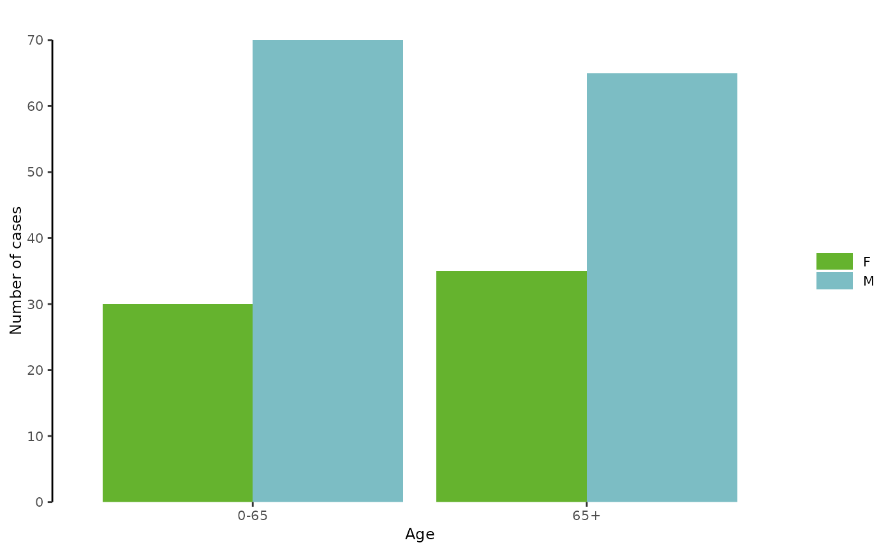

Grouped bar graph
plotBarGrouped.RdThis function draws a vertical grouped bar graph of the values of variable 'Yvar'
with the categorical variable 'Xvar' on the x-axis and grouped by 'Group' categorical variable.
Expects aggregated data.
Usage
plotBarGrouped(
.data,
xvar = "XLabel",
xlabel = "",
yvar = "ZValue",
ylabel = "",
group = "YLabel",
fill_color = EcdcColors(col_scale = "qual", n = length(unique(.data[[group]]))),
position = "dodge"
)Arguments
- .data
dataframe containing the variables to plot
- xvar
character string, name of the variable to plot on the x-axis in quotes (default
"XLabel")- xlabel
character string, label of the x axis
- yvar
character string, name of the variable to plot on the y-axis in quotes (default
"ZValue")- ylabel
character string, label of the y axis
- group
character string, name of the grouping variable in quotes, e.g. gender. (default
"YLabel").- fill_color
vector of character strings, hexadecimal colour to use in the graph for bars; the vector should contain the number categories in
"group"variable. (default to ECDC blue"#7CBDC4"and ECDC green"#65B32E", see EcdcColors(col_scale = "qual", n = 2))- position
character string, position of the bars, either
"dodge"or"stack"(default"dodge", seegeom_bar(position = ... )).
See also
Global function: getAgeGender
Internal function: EcdcColors
Required Packages: ggplot
Examples
# --- Create dummy data
mydat <- data.frame(Gender=c("F", "F", "M", "M"),
AgeGroup = c("0-65", "65+", "0-65", "65+"),
NumberOfCases = c(30, 35, 70, 65))
# --- Plot the dummy data
plotBarGrouped(mydat,
xvar = "AgeGroup",
xlabel = "Age",
yvar = "NumberOfCases",
ylabel = "Number of cases",
group = "Gender")

# -- Create dummy data
mydat <- data.frame(VaccStatus = rep(c("Unvaccinated", "1 dose", "2 doses", "3 doses"), 3),
AgeGroup = rep(c("<1", "1-4", "5-9") , each = 4),
Proportion = c(90, 10, 0, 0,
30, 50, 20, 0,
10, 25, 35, 30))
mydat$VaccStatus <- factor(mydat$VaccStatus,
levels = c("Unvaccinated", "1 dose", "2 doses", "3 doses"))
plotBarGrouped(mydat,
xvar = "AgeGroup",
xlabel = "Age (years)",
yvar = "Proportion",
ylabel = "Proportion of cases %",
group = "VaccStatus",
position = "stack")